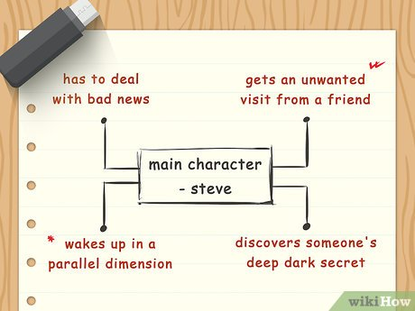
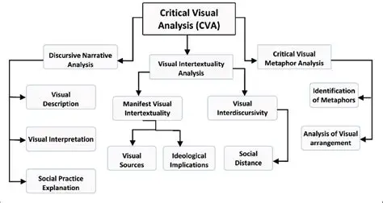

The Mechanics of Language
Literary devices are far more than aesthetic decorations or rigid rules designed for simple identification; they serve as the vital architecture required to breathe life into a text. Studying these elements in depth has completely altered my understanding of narrative creation, teaching me how to look beneath surface-level words to discover structural beauty.
Metaphors, similes, foreshadowing, symbolism, personification, and imagery each act as specific layers that sculpt a piece of writing. These stylistic frameworks have successfully integrated themselves into my broader academic vocabulary, changing not only how I consume complex literature, but fundamentally transforming the clarity and persuasion of my daily writing seqence.

Literary Devices Glossary

How It Impacted My Voice
Entering this course, literary devieces felt like static visuals reserved strictly for professional novels, and I rarely utilized them with actual focus within my own drafting phases. However, developing an in-depth comprehension of their intentions has fundamentally updated my general strategy.
Instead of simply stating actions, I now deliberately model creative writing prompts and academic assignments with sharp metaphorical anchors to grab reader retention. Integrating subtle hints of foreshadowing and thematic symbolism turns what used to be shallow summary write-ups into dynamic narratives.
Example: Short Stories
A perfect example of this growth occurred during our short story unit. After analyzing structural patterns in classic literature, we had to write an original fiction story from scratch.
For this task, I chose to focus on imagery and personification instead of just basic plot resolution. By focusing on the environment rather than just explaining what was happening, I was able to create a clean, multi-layered final draft.

Encountering Complex Perspectives
Looking past the basic mechanics of text, the themes we covered this semester really challenged my perspective on ethics and society. Closely analyzing the class readings forced me to think beyond my usual viewpoints and look at complicated, morally grey issues.
Learning to analyze character development helped me recognize nuance in human behavior outside of class. I realized that literature doesn't just reflect our own beliefs back at us—it’s a lens that focuses on overlooked parts of our shared global experiences and teaches us deeper societal empathy.

Quotes That Changed My Methods
Select a quote snippet below to review its analytical impact value on my analytical approach.
"The world is not switchable into simple binaries: good and bad, black and white, right and wrong. It's all a grey, shifting mass." - Julian Barnes
← Analyze Theoretical Imprint"A beautiful line of verse has twelve syllables, but it contains a thousand things." - Gustave Flaubert
← Analyze Theoretical ImprintThe Power of Peer Feedback
True growth doesn't take place alone, which is why our peer editing circles were so valuable this term. Initially, showing my rough drafts to my classmates made me hesitant, as it felt like putting a vulnerable, unfinished project on display.
This process quickly changed my view on receiving feedback. Seeing others point out gaps in my logic made me realize where my arguments lacked crucial support. Learning to accept constructive criticism stripped away my academic ego, teaching me to value the detailed work of revising my drafts.
Device Title
Device explanation text strings render natively here.